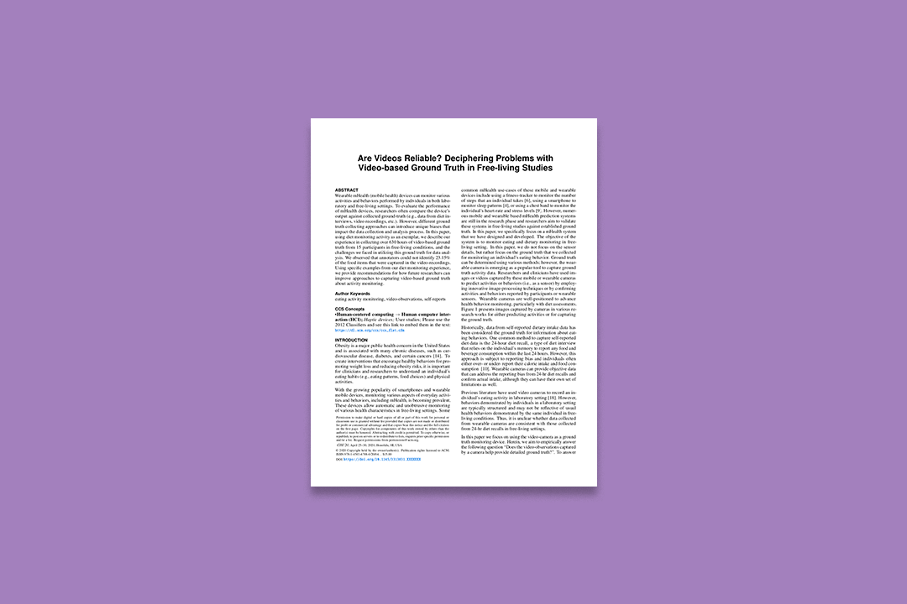
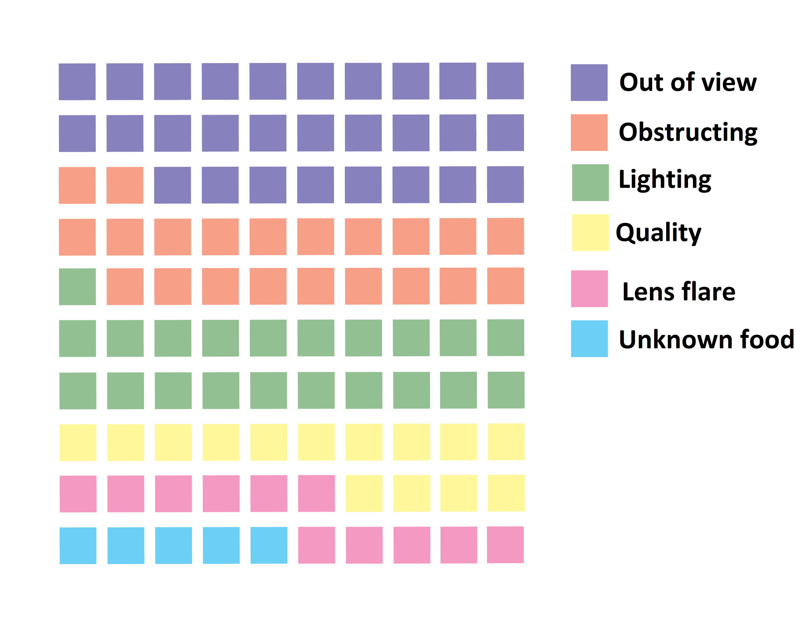
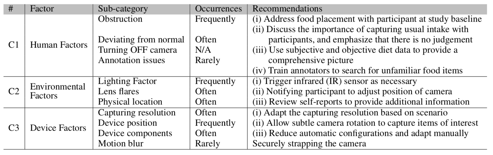

HABits Lab
Role: Undergrad Researcher
When: June 2019 - September 2019
Professor: Nabil Alshurafa
Outcome: A paper for the CHI 2021 conference.

BACKGROUND
Obesity is a major concern in the United States that effects 40% of our population. Registered Nutritionists who work with patients with obesity currently use the 24-hour diet recall to track caloric intake for a day. The 24-hour diet recall is considered the Gold Standard.
At HABits Lab, we work on wearable mHealth (mobile health). In 2017, HABits Lab conducted a study with 17 participants of varying age, weight, and gender. For three weeks, users were asked to wear a camera located on their non-dominant shoulder in order to capture food consumption. Participants also completed the 24-hour recall with a dietitian.
RESEARCH
During my time at HABits Lab, I annotated about 650 hours of film collected from the 2017 study. By annotating, I was able to collect a wide range of data such as:
- Items that were seen in the video and not in the 24-hour diet recall
- If the participant was eating alone or with others
- If the participant was eating at home or out
- If the participant was looking at a screen during their meal
- If the video data was indecipherable and why
Since the lab was planning on doing a second round of the same study with updated technology in fall of 2019, the lab as a whole wanted to learn from the past study. So we were extremely interested in why video data was indecipherable at times. In total, I labeled 647 meals, with 21% being indecipherable. I analyzed the indecipherable items and broke them down into a high level categorization of why they were indecipherable.

Knowing the causes of indecipherable data from the camera allowed us to analyze further what factors were at play. We identified three major categories, their frequency, and a recommendation for improvements for the future device.

OUTCOME
My research based on the study is being used in a recommendation paper for the 2021 CHI conference with lead author Sougata Sen. As a co-author, I worked on the formation of our arguments, the images and charts, and the literary references. The entirety of the rough draft can be read here.